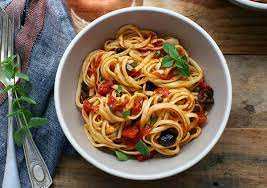

Spaghetti Puttanesca

Delicious and Quick
Spaghetti alla puttanesca (pronounced spaɡhetti alla puttanesca in Italian) is an Italian pasta dish invented in Naples in the mid-20th century and made typically with tomatoes, olive oil, olives, chili peppers, capers, and garlic—with vermicelli or spaghetti pasta
Ingredients
- 6oz Spaghetti
- 1 cup crushed tomatoes
- 1/4 cup pitted black olives
- 2 tsp capers
- 3 anchovies
- 1/2 clove garlic
- 2 tbsp parmesan
- 2 pinches red pepper flakes
Steps
- Roughly chop the olives, anchovies, andcapers.
- Heat a drizzle of olive oil in a pan over medium heat. Add the olives, anchovies, and capers.
- Add crushed or minced garlic to the pan. Then add the red pepper flakes. Cook for 2 min.
- Add the crushed tomatoes. Reduce the heat to low & simmer for 15 more min.
- Meanwhile, cook the pasta in a pot of salted boiling water according to the package instructions. Drain it.
- Mix the cooked pasta into the sauce.
- Season with salt, pepper, and grated parmesan